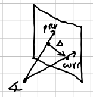
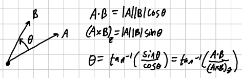
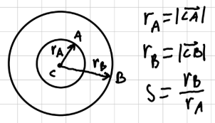

Use WASD to move the camera around.
Use Shift/Space to move the camera up/down.
Use ARROWS to look around.
(note: mesh interaction halts camera movement.)
While hovering over a mesh:
Drag T to translate it.
Drag R to rotate it.
Drag E to change its extent(scale);
Press B to toggle the bounding box view.
For this project, I wanted to experiment with the interaction between the mouse and objects in a 3d scene.
First I calculate the mouse ray using the mouse position in clip space times the inverse of the camera's view-projection matrix.
Then for each mesh, the ray-intersection is calculated(against all of its triangles) and the closest mesh is chosen for interaction.
The camera's forward direction is stored, as well as the point in 3d space where the ray hit.
Let's call this the hit plane.
For translation, the previous and current mouse rays are intersected with the hit plane.
The difference between those points is the delta by which we update the translation of the mesh by.



When using any 3d software, scene interaction is not trivial due to the nature of depth being hard to account for. This system can help make movements more intuitive.